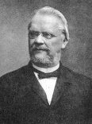

|
|

Karl Georg Friedrich Rudolf Leuckart (1822-1898)
Rudolf Leuckart was considered the "Father of Parasitology" as well as one of the most famous zoologists of the 19th century. He began his career in zoology shortly after earning a M.D. degree from the University of Gottingen when he embarked on a scientific expedition to the North Sea to study marine invertebrates. His careful descriptions of morphologic details gave major support to the newly established field of animal systematics: the idea that evolution can be traced through structural changes. Leuckart was awarded an assistant professorship at age 28 followed in 1869 by a full professorship at the University of Leipzig.
"It is not possible for man, as a thinking being, to close his mind to the knowledge that he is ruled by the same power as is the animal world. Like the despised worm he lives in dependence upon external commands, and like the worm he perishes, even when he has shaken the world through the power of his ideas."
In parasitology, Leuckarts best known work centered on vertebrate infections, chiefly tapeworm and trichinosis. Although not the first to discover that trichina spiralis worm existed as an infectious agent in pigs -- that honor belongs to Joseph Leidy of Philadelphia -- Leuckart and his colleague, Friedrich Albert von Zenker, documented the life cycle of the parasite in hogs and men. This led Rudolf Virchow to establish the first meat inspection laws in Germany.
Leuckart's textbooks remain classics to this day. He was a superb teacher and developed his scientific wall charts as teaching aids. More than 130 of his former students came from around the world for the Festschrift in celebration of his 70th birthday. Of the nine American students and fellow scientists, seven were affiliated with the MBL.
- Charles Otis Whitman - (1842 - 1910)
Professor of Animal Morphology, University of Chicago; First director of the MBL
- Jesse Walter Fewkes - (1850 - 1930)
Professor Museum of Comparative Zoology, Harvard; Assistant to Louis Agassiz at the Anderson School, Penikese Island; Anthropologist in the American Southwest and Chief of the Bureau of American Ethnology.
- Edward Gardiner - (1854 - 1907)
Weiland Professor of Biology, MIT; One of the first Trustees of the MBL.
- Edward Laurens Mark - (1847 - 1946)
Hersey Professor of Zoology, Harvard University
- William Patten - (1861 - 1932)
Professor of Zoology, Grand Forks, North Dakota
- Louis Murbach - (1864 - ?)
Investigator MBL 1900 - 1910; Published on medusae of Eel Pond; Director Biology Department, Central High School, Detroit
- Charles Manning Child - (1869 - 1954)
Professor of Zoology, University of Chicago
|
|
Introduction - Biography - Exhibit - Wall Charts - References - Contacts - Virtual Tour - MBLWHOI Library
© 2006 MBLWHOI Library, All Rights Reserved
Technical Support
webmaster@mblwhoilibrary.org
|
|
|
|
|